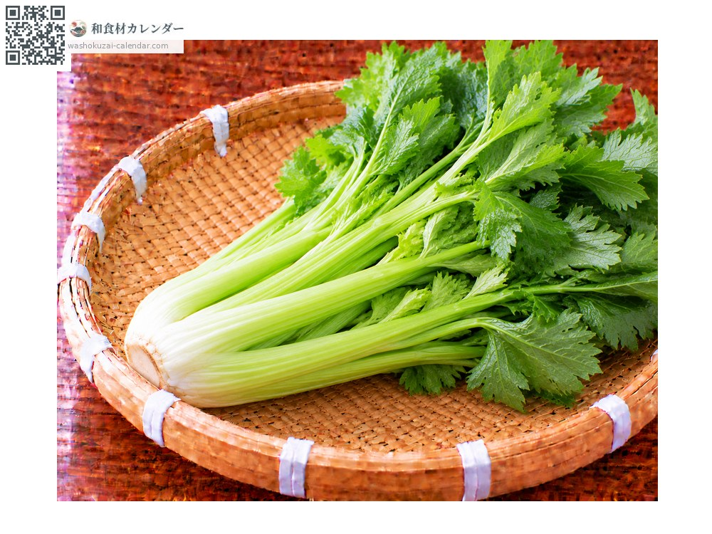
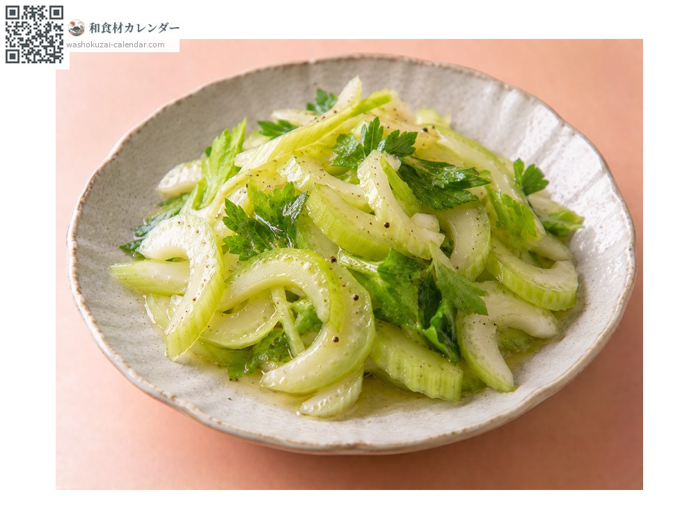
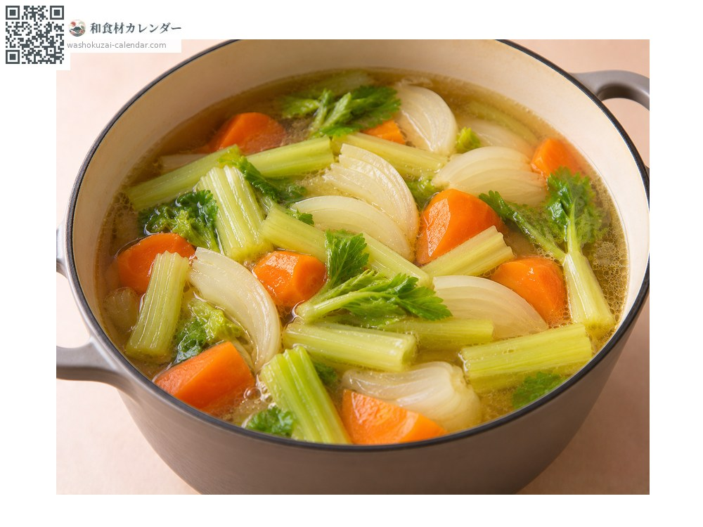
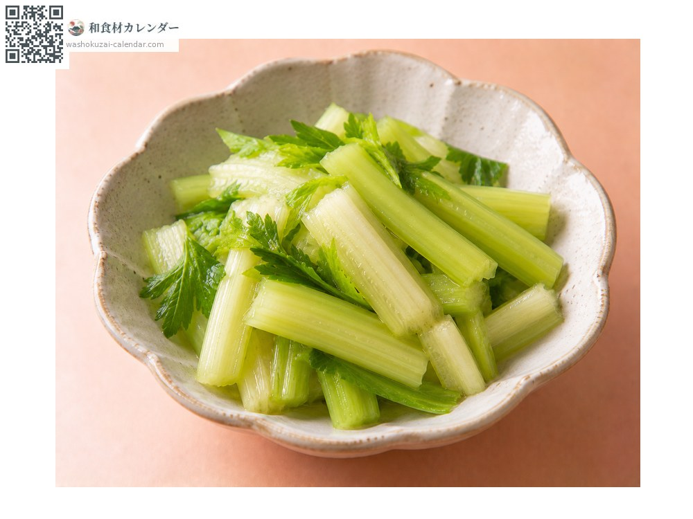
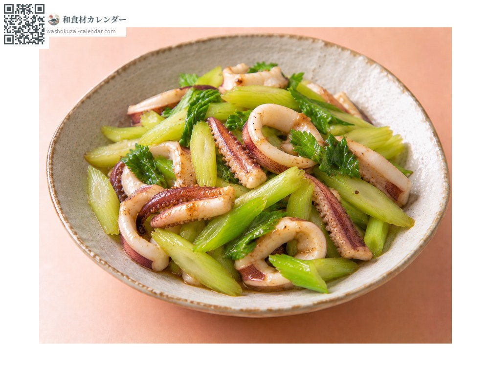

蔬菜
西洋芹
セロリ せろり
应季时期为1月、2月、3月、4月、11月、12月

应季时期
1月
2月
3月
4月
5月
6月
7月
8月
9月
10月
11月
12月
应季有供应
烹饪方法

沙拉
去除粗筋后切薄片，清爽的香气与口感。

汤的香味
放进炖煮料理，是西式高汤的基底。

浅渍
用盐腌渍，香气会变柔和、更好入口。

热炒
大火快炒，叶子切碎也能用。
挑选方法
茎肥厚、筋络清楚，叶子深绿。切口没有干掉。
保存方法
把叶与茎分开，各自装袋冷藏。叶子要先用完。
主要产地
小知识
独特的香气来自芹菜苷等成分，常用来去除肉的腥味。叶子的香气同样强烈，可以切碎加进汤品或热炒。日本有加藤清正从朝鲜带回的传说，因此也曾被称为「清正人参」。